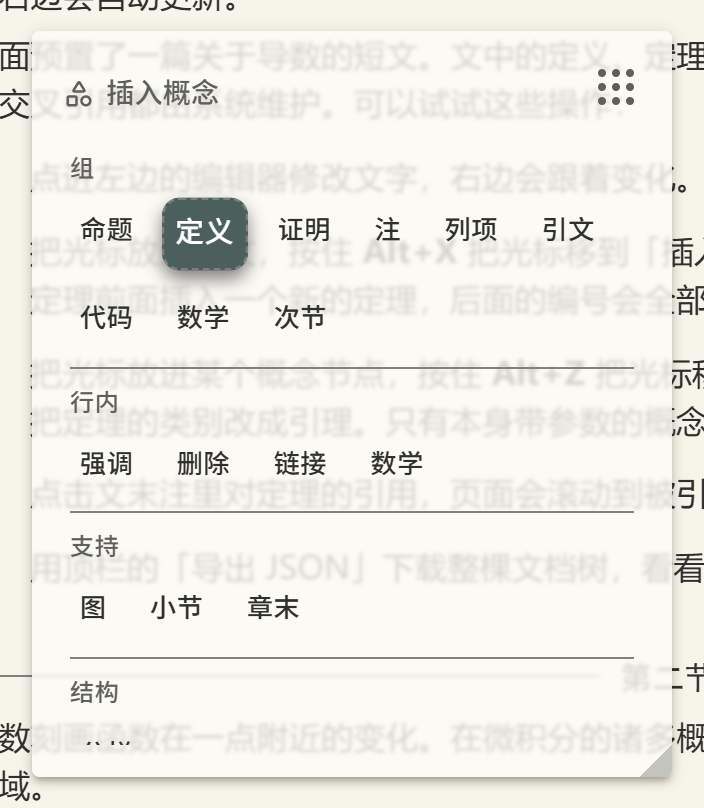
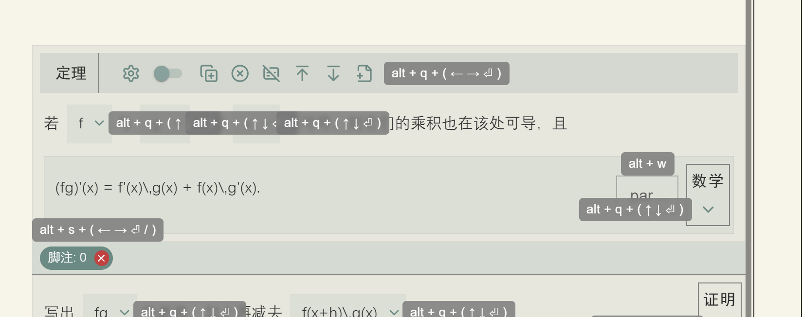

键盘操作
默认编辑器带一整套不用鼠标也能操作的方案，基于 @ftyyy/mouseless 库。
这一页讲它的模型（为什么是「按住组合键再按方向键」而不是「一个功能一个快捷键」）、
全部组合键，以及提示机制。这套东西随 DefaultEditorComponent 自带，不需要配置。
为什么是这个模型
结构化编辑器有一个绕不开的矛盾：可操作的东西太多了。每个节点身上有八个按钮， 侧边栏有四个，概念面板里有几十个概念，参数面板里有若干个参数项。 如果给每个功能分配一个快捷键，键位很快就会用光，而且没人记得住。
这套方案的做法是把界面切成若干个「空间」，每个空间是一组界面元素加上进入它的组合键。 按住某个组合键就进入对应的空间，此时方向键不再作用于文字，而是在这个空间里移动选择框， 回车触发当前选中的元素，松开组合键就回到正常输入状态。
这样需要记住的只有「哪个组合键对应哪一块界面」，一共六个，块内部的移动一律是方向键。 这一点对定制也有影响：你往侧边栏或者节点上追加的按钮不需要分配新的快捷键， 它会自动排进所在空间的序列里，用同一组方向键就能走到。
全部组合键
下面这张表是完整清单。前五行是空间，按住后用方向键移动、回车触发；后三行是直接生效的按键。
| 按键 | 作用范围 | 方向键的含义 |
|---|---|---|
| Alt+Q | 当前节点上的按钮 | 左右在同一节点的按钮间移动，上下在嵌套层级间移动（上到父节点，下到子节点） |
| Alt+E | 侧边栏 | 上下遍历侧边栏按钮，包括你追加的那些 |
| Alt+X | 「插入概念」面板 | 左右在概念间移动，上下移到相邻行视觉上最接近的概念；句点和斜杠跳到上一个或下一个概念类型 |
| Alt+Z | 「修改参数」面板 | 在参数项之间移动，回车把焦点放进该项的输入框 |
| Alt+S | 节点上的抽象节点标签 | 在标签之间移动，回车打开对应的抽象编辑器 |
| Alt+W | 节点右侧的小输入框 | 直接把焦点放进 UniversalExtra 的输入框 |
| Ctrl+S | 全局 | 触发 onSave，也就是你自己的保存逻辑 |
| Ctrl+D | 抽象编辑器 | 关闭当前打开的抽象编辑窗口 |
这几个组合键的浏览器默认行为都被拦掉了，所以 Ctrl+S 不会弹出「保存网页」对话框。

按键提示
组合键记不住是正常的，所以界面自带提示，而且默认就是开着的。 单独按住 Alt 不放（不要同时按别的键）片刻，界面上各处会浮现出小标签， 写着这一块对应的组合键以及可用的方向键；松开就消失。

alt + q + ( ← → ⏎ )，
意思是按住 Alt+Q 之后可以用左右方向键移动、回车触发；
抽象节点那一行是 alt + s，右侧小输入框是 alt + w。
每一处提示都同时告诉你组合键和它接受的方向键。
侧边栏第四个按钮是这套提示的总开关。熟悉之后可以关掉，此时按住 Alt 也不再有提示。
这个开关本身是一个普通组件（ShowHintControlButton），
如果你在做自己的界面，可以把它放到别处。
和文本输入的关系
空间导航只在按住组合键期间接管方向键。松开之后，方向键、回车、退格全都回到正常的文本编辑行为， 光标还在原来的位置。它是叠加在文本编辑之上的临时状态，不是一个需要退出的模式。
category 参数上回车，改成「引理」；
松开，继续写。